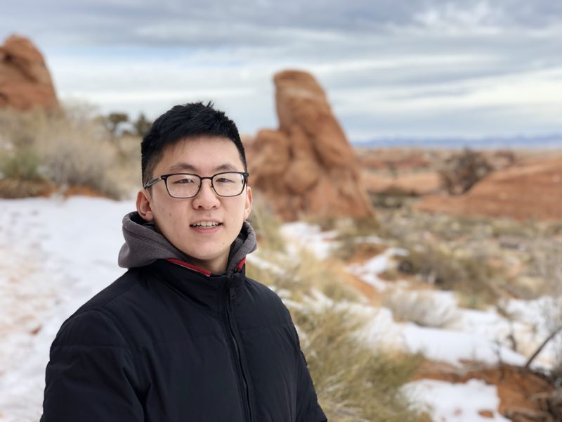

About
I’m Anthony Cheng, an ORISE Postdoctoral Fellow with the National Energy Technology Laboratory (NTEL) working with Dr. Alison Fritz, with a visiting appointment at the WE3 Lab at Stanford University under Dr. Meagan Mauter. I am also excited to announce that I will join the faculty of the H. Milton Stewart School of Industrial and Systems Engineering at the Georgia Institute of Technology in Fall 2027 as an Anderson-Interface Early Career Assistant Professor!
My research advances the supply chains, critical materials production, and manufacturing systems that underpin energy security, energy transitions, and decarbonization. Decisions about technology, sourcing, and policy shape how these materials and technologies are produced and traded, and those production and trade pathways in turn determine outcomes like supply-chain security, cost competitiveness, and emissions. My aim is to represent these pathways explicitly and at decision-relevant resolution, so the trade-offs across those outcomes can be clearly evaluated.
My current work focuses on unconventional sources and processing routes for security-relevant critical minerals, building on previous research on vulnerabilities, incentives, and interventions in battery electric vehicle material supply chains, with recent papers in Nature Communications and Nature Energy. Future work aims to both deepen and expand these research trajectories, through endogenizing technology constraints and dynamics, firm manufacturing and sourcing choices, and how those interact with systems-level policy, as well as broadening beyond EVs and critical minerals to strategic material and machine dependencies of energy technologies writ large, supply-chain decisionmakers that current models overlook, and policies at different levels of geographic and institutional scales.
I received my PhD from Carnegie Mellon University in the Deparment of Engineering and Public Policy (EPP), where I was a National Science Foundation Graduate Research Fellowship Program (GRFP) Fellow, under the direction of Dr. Erica Fuchs, Dr. Valerie Karplus, and Dr. Jeremy Michalek. I previously graduated from MIT in 2020, where I majored in Materials Science and Engineering, with a double minor in Computer Science and Energy Studies.
Furthermore, I am honored to serve as the Vice President for the Macro Energy Systems Society, after serving as a fellow for the 2024-2025 year, alongside a concurrent appointment as a 2024-2025 fellow in the Resources for the Future's Critical Minerals Research Lab. Previously, I had also researched decarbonization in the industrial sector as an MIT Eloranta Fellow.
I care a lot about helping others, both on a "micro" community level and a "macro" global world problems level. I'm proud of my work in Carnegie Mellon's Graduate Student Assembly as the Vice President of Campus Affairs, advocating for graduate students in all non-academic and non-social settings (e.g. transportation, healthcare, parents and families, sustainability, dining, public art, etc.). In my undergraduate studies, I appreciated having the opportunity to lead StartLabs (MIT's undergrad entrepreneurship club) and MacGregor House (my living community).
In the past, I've been selected as one of the nation's top high school STEM students, presented at International Science Fairs, represented the United States at the National Geographic World Championships, performed as a piano soloist with the Utah Symphony and at locations like Carnegie Hall, and been recognized with a number of awards. I also enjoy reading, creative media, blogging about the NBA, beatboxing and a cappella (having won awards for Best Vocal Percussion and Best Arrangement at the "real-life" version of Pitch Perfect), making Discord bots, and other elements of the arts.
